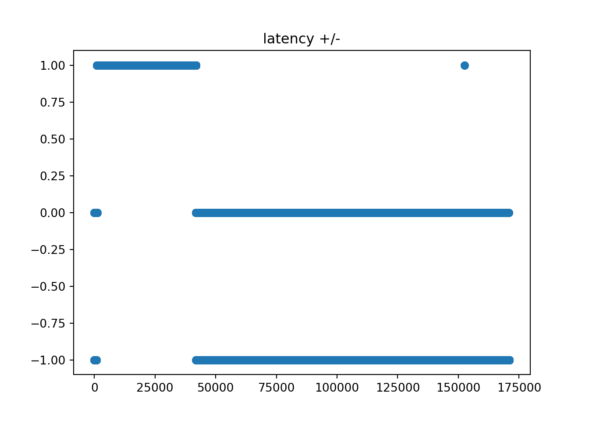
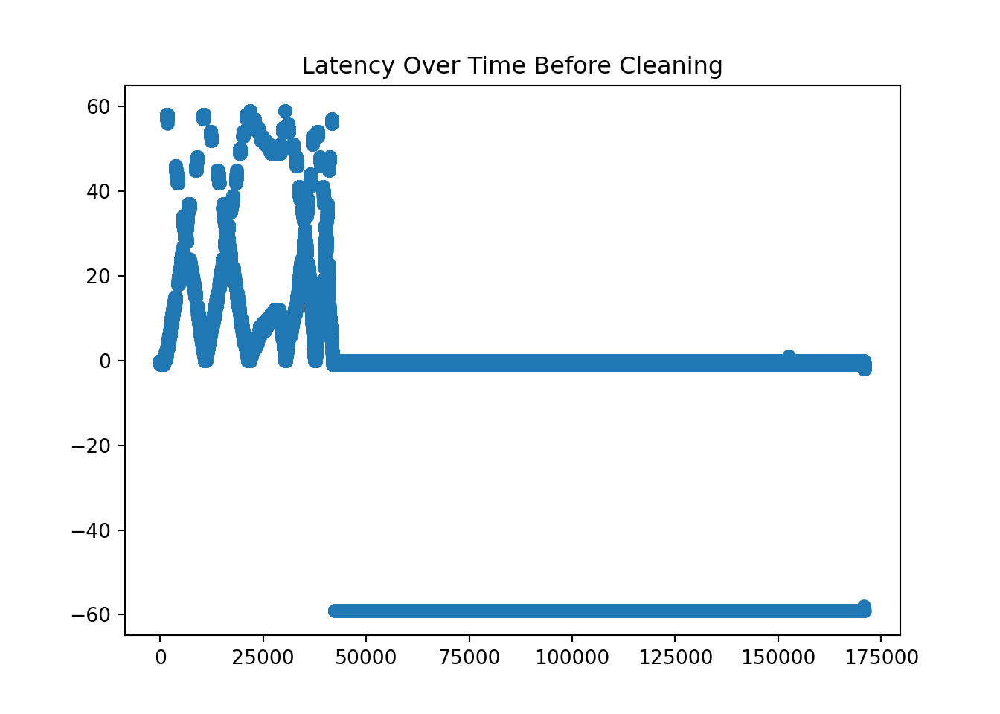
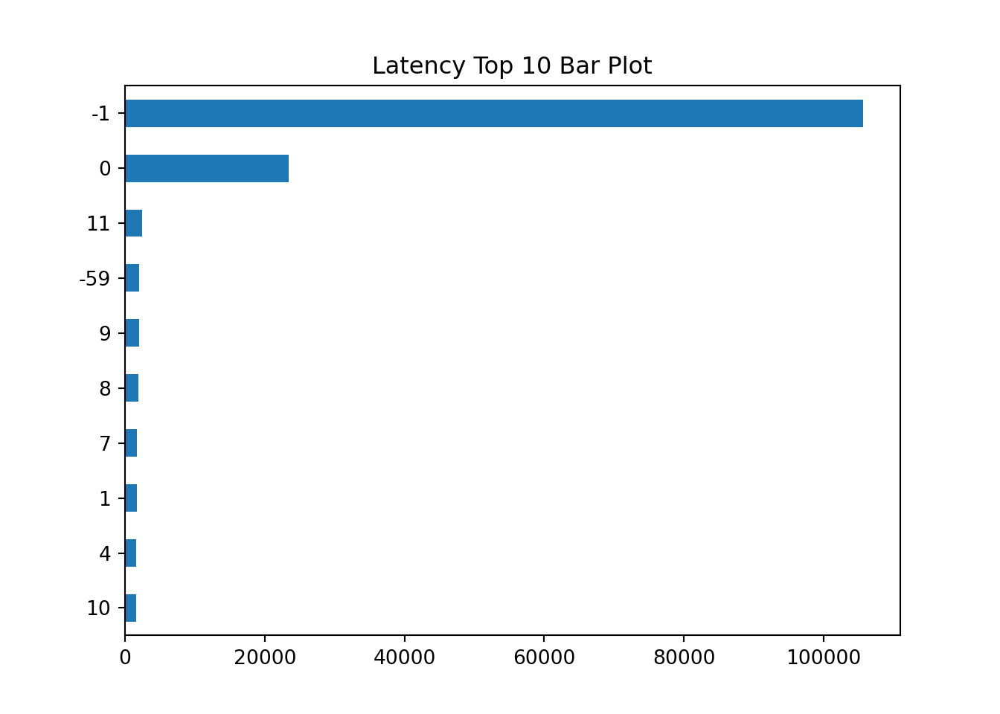
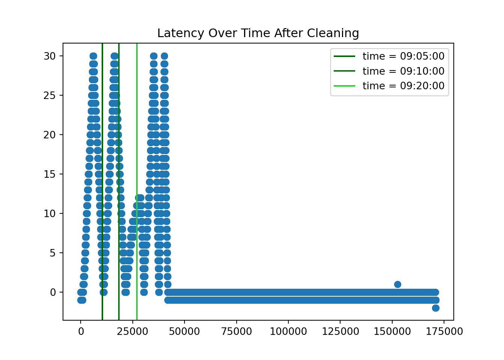
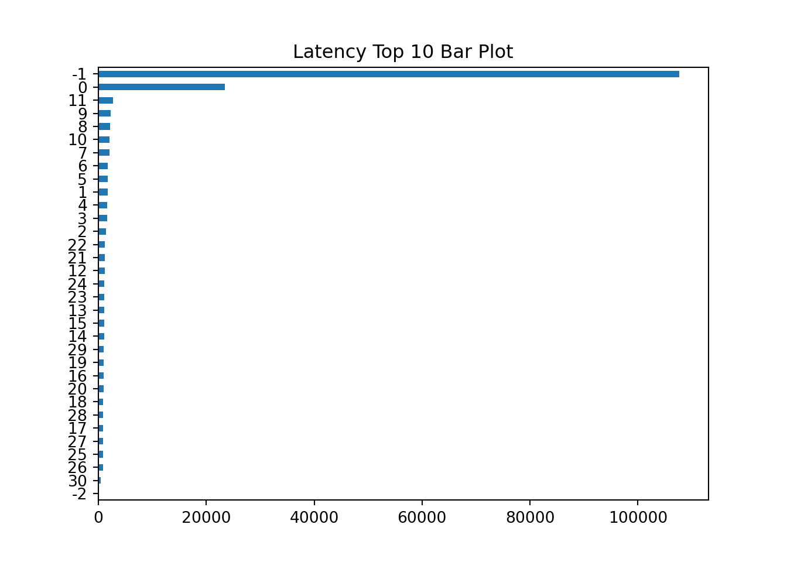
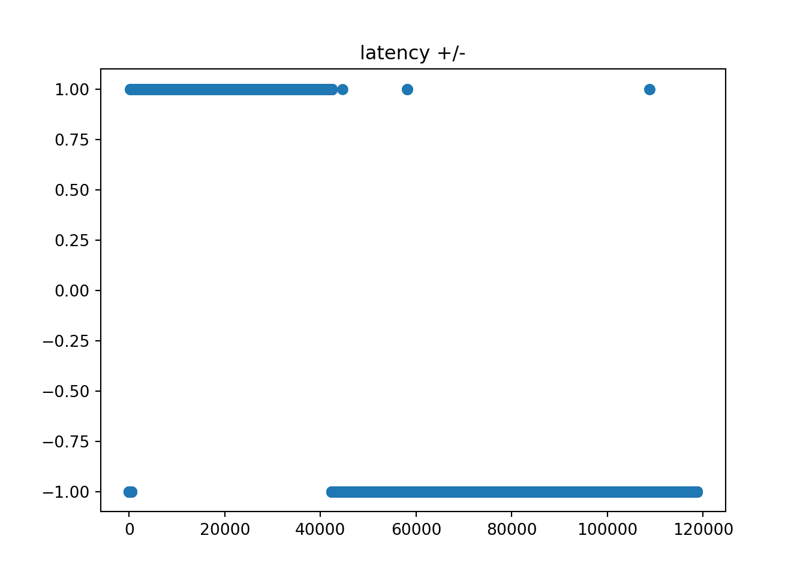
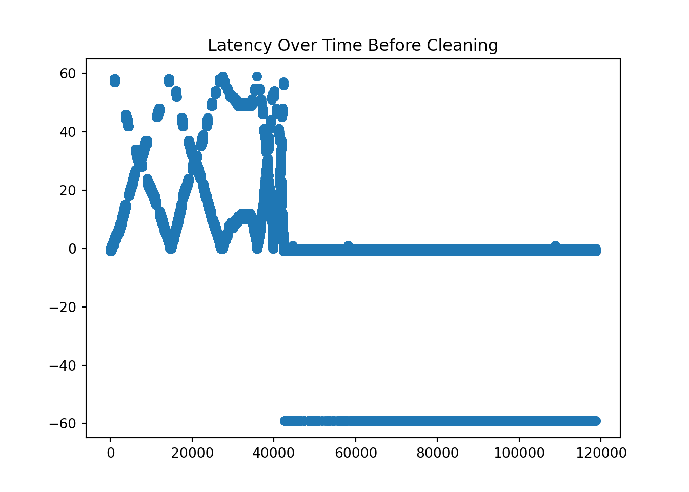
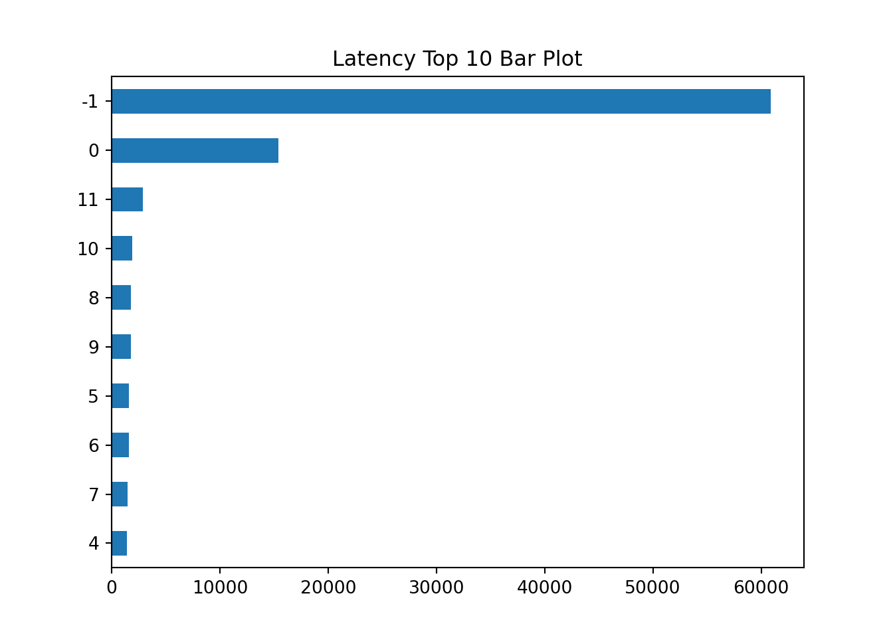
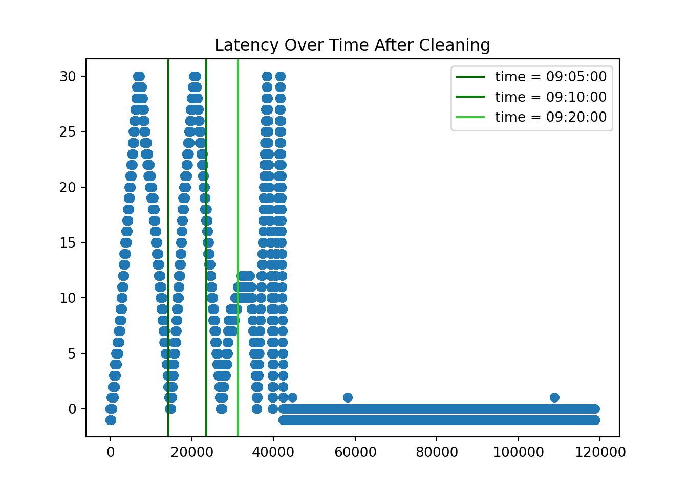
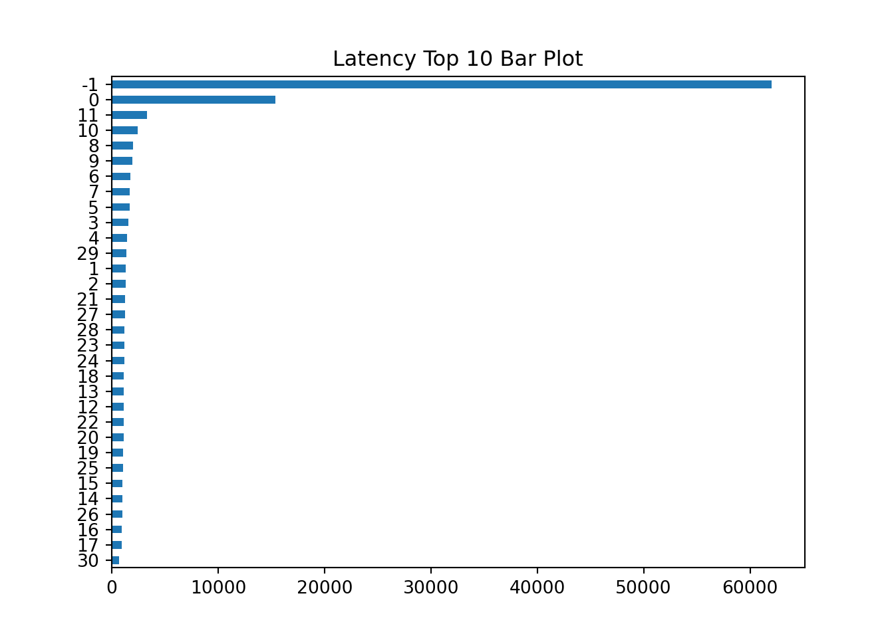

Note: 이 페이지는 키움 API를 통해 Real Time Tick Data를 받아온 후 데이터를 클리닝 하는 과정을 보여주고 있습니다. 오류 및 문의사항은 metrics@kakao.com 으로 메일주시면 감사하겠습니다
데이터 자체에 대한 질문과 데이터 제공에 관한 문의는 000 으로 메일 주시면 감사하겠습니다
R code 블럭과 Python code 블럭은 다음과 같이 색깔로 구분하겠습니다. 결과창은 동일하게 Ivory 색 블럭으로 표시됩니다.
# "이것은 R 코드 입니다."# "이것은 Python 코드 입니다."- Package
library(dplyr)
library(tidyverse)
library(DT)
library(reticulate) # Python
#py_install(packages = "matplotlib")
#py_install(packages = "pandas")
#py_install(packages = 'dfply')
options(scipen=999)
options(max.print = 99999999)
options(digits=10)Import Data
Check NA
wd = "G:/공유 드라이브/Project_TBD/Stock_Data/real_time/kiwoom_stocks/2021-01-14"
wd2 = "/Volumes/GoogleDrive/공유 드라이브/Project_TBD/Stock_Data/real_time/kiwoom_stocks/2021-01-20"
fn = list.files(path = wd2,
pattern = '.*stocks_trade.*\\.csv') # 마지막 30분 틱데이터 가지고오기
path = paste(wd2,fn[1:4],sep = '/')
# data = readr::read_csv(file = path,
# col_names = c('code','trade_date','timestamp','price','open','high','low',
# 'size','cum_size','ask1','bid1'))
tbl =
list.files(path = wd2, pattern = '.*stocks_trade.*\\.csv')[2:8] %>%
map_df(~readr::read_csv(paste(wd2,.,sep = '/'),
col_names = c('code','trade_date','timestamp','price','open','high','low','size','cum_size','ask1','bid1','rotation','bs_ration', 'mkt_type', 'mkt_cap'),
col_types = cols(.default="d", code = "c")
)
)
sum(is.na(tbl))## [1] 0import numpy as np
import matplotlib.pyplot as plt
import pandas as pd
from datetime import datetime, timedelta
#py_install(packages = "matplotlib")
#py_install(packages = "pandas")
pd.options.display.float_format = '{:.4f}'.format
pd.set_option('display.max_rows', 100)
df_py = r.tbl
df_py.head()## code trade_date timestamp ... bs_ration mkt_type mkt_cap
## 0 279540 90000.0000 20210120090000.1328 ... 500.0000 2.0000 153.0000
## 1 265740 90001.0000 20210120090000.4375 ... 500.0000 2.0000 2014.0000
## 2 088290 90001.0000 20210120090000.4414 ... 500.0000 2.0000 1404.0000
## 3 118990 90001.0000 20210120090000.5625 ... 23.0400 2.0000 3101.0000
## 4 265740 90001.0000 20210120090000.5664 ... 500.0000 2.0000 2023.0000
##
## [5 rows x 15 columns]Task1: 레이턴시 체크 및 Buy/Sell 구분하기
Samsung Stock
- KOSPI Code for Samsung Electronics is ‘005930’
ss = df_py[df_py.code == '005930'].reset_index(drop=True)
ss.shape## (171019, 15)1. Use time object in python
Delete rows where “second” does not lie between 0 and 59.
Substring the timstamp to get each time component.
ss = ss[ss['timestamp'].apply(lambda x: int(str(int(x*1000000))[12:14])) < 60 ]
ss = ss.assign( microsecond = ss['timestamp'].apply(lambda x: str(int(x*1000000))[14:20]),
second = ss['timestamp'].apply(lambda x: str(int(x*1000000))[12:14]),
minute = ss['timestamp'].apply(lambda x: str(int(x*1000000))[10:12]),
hour = ss['timestamp'].apply(lambda x: str(int(x*1000000))[8:10]),
day = ss['timestamp'].apply(lambda x: str(int(x*1000000))[6:8]),
month = ss['timestamp'].apply(lambda x: str(int(x*1000000))[4:6]),
year = ss['timestamp'].apply(lambda x: str(int(x*1000000))[0:4]),
kw_time = ss['trade_date'].apply(lambda x: str(int(x))))
ss.head()## code trade_date timestamp price ... day month year kw_time
## 0 005930 90010.0000 20210120090009.8633 88900.0000 ... 20 01 2021 90010
## 1 005930 90010.0000 20210120090009.8906 89000.0000 ... 20 01 2021 90010
## 2 005930 90010.0000 20210120090009.9414 89000.0000 ... 20 01 2021 90010
## 3 005930 90010.0000 20210120090010.0195 88900.0000 ... 20 01 2021 90010
## 4 005930 90010.0000 20210120090009.7656 89000.0000 ... 20 01 2021 90010
##
## [5 rows x 23 columns]- Transform data type to str to use substring to make the format like “%Y-%m-%d %H:%M:%S.%f”
- We calculate the latency by subtracting ‘trade_date’ from the ‘timestamp’
ss['time'] = ss.apply(lambda x: datetime(
year = int(x['year']),
month = int(x['month']),
day = int(x['day']),
hour = int(x['hour']),
minute = int(x['minute']),
second = int(x['second']),
microsecond = int(x['microsecond'])), #.strftime("%H:%M:%S.%f")[:-3],
axis=1)
ss.head(10)## code trade_date ... kw_time time
## 0 005930 90010.0000 ... 90010 2021-01-20 09:00:09.862144
## 1 005930 90010.0000 ... 90010 2021-01-20 09:00:09.890816
## 2 005930 90010.0000 ... 90010 2021-01-20 09:00:09.939968
## 3 005930 90010.0000 ... 90010 2021-01-20 09:00:10.017792
## 4 005930 90010.0000 ... 90010 2021-01-20 09:00:09.763840
## 5 005930 90010.0000 ... 90010 2021-01-20 09:00:09.767936
## 6 005930 90010.0000 ... 90010 2021-01-20 09:00:09.784320
## 7 005930 90010.0000 ... 90010 2021-01-20 09:00:09.804800
## 8 005930 90010.0000 ... 90010 2021-01-20 09:00:09.890816
## 9 005930 90010.0000 ... 90010 2021-01-20 09:00:09.911296
##
## [10 rows x 24 columns]2. Calculate latency and clean it [레이턴시 계산 및 정리]
- Calculate the latency by subtracting the time provided by Kiwoom dataset and self-recorded time at the moment of processing the data delivered through the Kiwoom API.
오전 8시 9시 앞에 ’0’을 붙여주기
ss['kw_time'].apply(lambda x: x[0:2]).value_counts()## 10 31129
## 14 24155
## 13 20903
## 90 18351
## 11 18301
## 12 17599
## 15 9034
## 91 8596
## 92 6751
## 93 6410
## 95 4936
## 94 4848
## Name: kw_time, dtype: int64ss['kw_time'] = ss.kw_time.apply(lambda x: '0' + x if ((x[0]=='8') | (x[0]=='9')) else x)
ss['kw_time'].apply(lambda x: x[0:2]).value_counts()## 09 49892
## 10 31129
## 14 24155
## 13 20903
## 11 18301
## 12 17599
## 15 9034
## Name: kw_time, dtype: int64- 키움 타임 만들기
ss['kwtime'] = ss.apply(lambda x: datetime(year = int(x['year']),
month = int(x['month']),
day = int(x['day']),
hour = int(x['kw_time'][0:2]),
minute = int(x['kw_time'][2:4]),
second = int(x['kw_time'][4:6])),
axis = 1
)Latency +/- 정보 가지고 오기
- 인 경우, 로컬 타임이 키움 타임보다 늦는 경우
- 인 경우, 로컬 타임이 키움 타임보다 빠른 경우 (weird)
ss['latency_ind']=ss.apply(lambda x: 1 if (int(str(int(x['timestamp']*1000000))[8:14]) > x['trade_date']) else
0 if (int(str(int(x['timestamp']*1000000))[8:14]) == x['trade_date']) else -1, axis=1)plt.scatter(ss['latency_ind'].reset_index().index,ss['latency_ind'])
plt.title('latency +/-')
Latency Value 가지고 오기
ss['latency_val'] = ss.apply(lambda x: abs(x['time'].second - x['kwtime'].second),
axis =1
)
ss['latency'] = ss['latency_val']*ss['latency_ind']
ss1 = ss[['time', 'kwtime', 'kw_time', 'hour', 'minute', 'second', 'price','size','ask1','bid1','latency']]
ss1.head(10)## time kwtime ... bid1 latency
## 0 2021-01-20 09:00:09.862144 2021-01-20 09:00:10 ... 88900.0000 -1
## 1 2021-01-20 09:00:09.890816 2021-01-20 09:00:10 ... 88900.0000 -1
## 2 2021-01-20 09:00:09.939968 2021-01-20 09:00:10 ... 88900.0000 -1
## 3 2021-01-20 09:00:10.017792 2021-01-20 09:00:10 ... 88900.0000 0
## 4 2021-01-20 09:00:09.763840 2021-01-20 09:00:10 ... 88900.0000 -1
## 5 2021-01-20 09:00:09.767936 2021-01-20 09:00:10 ... 88900.0000 -1
## 6 2021-01-20 09:00:09.784320 2021-01-20 09:00:10 ... 88900.0000 -1
## 7 2021-01-20 09:00:09.804800 2021-01-20 09:00:10 ... 88900.0000 -1
## 8 2021-01-20 09:00:09.890816 2021-01-20 09:00:10 ... 88900.0000 -1
## 9 2021-01-20 09:00:09.911296 2021-01-20 09:00:10 ... 88900.0000 -1
##
## [10 rows x 11 columns]plt.scatter(ss1.reset_index().index, ss1.latency)
plt.title('Latency Over Time Before Cleaning')
ss1.latency.value_counts().head(10).iloc[::-1].plot.barh(stacked=True)
plt.title('Latency Top 10 Bar Plot')
ss1.latency.value_counts().index## Int64Index([ -1, 0, 11, -59, 9, 8, 7, 1, 4, 10, 5, 6, 3,
## 2, 12, 21, 22, 19, 20, 36, 14, 15, 18, 13, 28, 29,
## 23, 27, 35, 43, 16, 50, 30, 37, 44, 34, 47, 26, 17,
## 24, 25, 45, 33, 31, 46, 53, 51, 52, 49, 38, 42, 32,
## 54, 39, 57, 40, 55, 58, 48, 41, 56, 59, -2, -58],
## dtype='int64')- Check the time where large discrepancy happened!
over 30 or not!
- We assume that when the latency is minus value, the maximum time difference is 1.
- 음의 레이턴시가 나오는 경우는 최악의 경우 1초 빠르게 record 하는 경우!!
- When latency is a number x (e.g. 59) over 30, the actual latency is 60 - x
- When latency is a number x (e.g. 20) below 30 and over 0, the actual latency is x
- When latency is a number x (e.g. -59) below (let’s say) -5, the actual latency is -(60 + x)
- We can check it as in below.
ss1[ss1.latency == -59][['kwtime','hour','minute','second','latency']]## kwtime hour minute second latency
## 42311 2021-01-20 09:44:00 09 43 59 -59
## 42312 2021-01-20 09:44:00 09 43 59 -59
## 42313 2021-01-20 09:44:00 09 43 59 -59
## 42314 2021-01-20 09:44:00 09 43 59 -59
## 42317 2021-01-20 09:44:00 09 43 59 -59
## ... ... ... ... ... ...
## 170704 2021-01-20 15:50:00 15 49 59 -59
## 170705 2021-01-20 15:50:00 15 49 59 -59
## 170815 2021-01-20 15:53:00 15 52 59 -59
## 170841 2021-01-20 15:54:00 15 53 59 -59
## 170949 2021-01-20 15:58:00 15 57 59 -59
##
## [2040 rows x 5 columns]ss1[ss1.latency == 40][['kwtime','hour','minute','second','latency']]## kwtime hour minute second latency
## 33693 2021-01-20 09:30:00 09 31 40 40
## 33694 2021-01-20 09:30:00 09 31 40 40
## 33695 2021-01-20 09:30:00 09 31 40 40
## 33700 2021-01-20 09:30:00 09 31 40 40
## 33701 2021-01-20 09:30:00 09 31 40 40
## ... ... ... ... ... ...
## 39598 2021-01-20 09:39:10 09 39 50 40
## 39599 2021-01-20 09:39:10 09 39 50 40
## 39606 2021-01-20 09:39:10 09 39 50 40
## 39610 2021-01-20 09:39:11 09 39 51 40
## 39611 2021-01-20 09:39:11 09 39 51 40
##
## [132 rows x 5 columns]ss1[ss1.latency == 39][['kwtime','hour','minute','second','latency']]## kwtime hour minute second latency
## 17553 2021-01-20 09:09:19 09 10 58 39
## 17561 2021-01-20 09:09:19 09 10 58 39
## 17587 2021-01-20 09:09:20 09 10 59 39
## 33774 2021-01-20 09:30:07 09 31 46 39
## 33776 2021-01-20 09:30:07 09 31 46 39
## ... ... ... ... ... ...
## 39688 2021-01-20 09:39:16 09 39 55 39
## 39691 2021-01-20 09:39:16 09 39 55 39
## 39695 2021-01-20 09:39:16 09 39 55 39
## 39699 2021-01-20 09:39:17 09 39 56 39
## 39709 2021-01-20 09:39:17 09 39 56 39
##
## [200 rows x 5 columns]ss1[ss1.latency == 21][['kwtime','hour','minute','second','latency']]## kwtime hour minute second latency
## 4654 2021-01-20 09:02:08 09 02 29 21
## 4655 2021-01-20 09:02:08 09 02 29 21
## 4656 2021-01-20 09:02:08 09 02 29 21
## 4672 2021-01-20 09:02:09 09 02 30 21
## 4673 2021-01-20 09:02:09 09 02 30 21
## ... ... ... ... ... ...
## 40751 2021-01-20 09:41:15 09 41 36 21
## 40755 2021-01-20 09:41:15 09 41 36 21
## 40758 2021-01-20 09:41:16 09 41 37 21
## 40764 2021-01-20 09:41:16 09 41 37 21
## 40772 2021-01-20 09:41:17 09 41 38 21
##
## [962 rows x 5 columns]ss1[ss1.latency == 20][['kwtime','hour','minute','second','latency']]## kwtime hour minute second latency
## 4516 2021-01-20 09:02:04 09 02 24 20
## 4517 2021-01-20 09:02:04 09 02 24 20
## 4518 2021-01-20 09:02:04 09 02 24 20
## 4526 2021-01-20 09:02:04 09 02 24 20
## 4527 2021-01-20 09:02:04 09 02 24 20
## ... ... ... ... ... ...
## 40839 2021-01-20 09:41:22 09 41 42 20
## 40840 2021-01-20 09:41:22 09 41 42 20
## 40841 2021-01-20 09:41:22 09 41 42 20
## 40842 2021-01-20 09:41:22 09 41 42 20
## 40855 2021-01-20 09:41:23 09 41 43 20
##
## [797 rows x 5 columns]Correct the wrongly calculated latency
ss2 = ss1.copy()
ss2['latency']=ss1.apply(lambda x: 60-x['latency'] if (x['latency'] > 30) else \
(-(60+x['latency']) if (x['latency']<-5) else x['latency']),axis=1)# x coordinates for the lines
xcoords = [ ss2.index[ss2['kw_time'] == '090500'][0],
ss2.index[ss2['kw_time'] == '091000'][0],
ss2.index[ss2['kw_time'] == '092000'][0] ]
# colors for the lines
colors = ['darkgreen','green','limegreen']
time = ['09:05:00','09:10:00','09:20:00']
plt.scatter(ss2.reset_index().index, ss2.latency)
for xc,c,time in zip(xcoords,colors,time):
plt.axvline(x=xc, label='time = {}'.format(time), c=c)
plt.legend()
plt.title('Latency Over Time After Cleaning')
ss2.latency.value_counts().iloc[::-1].plot.barh(stacked=True)
plt.title('Latency Top 10 Bar Plot')
Hyundai Car Stock
- KOSPI Code for Samsung Electronics is ‘005380’
ss = df_py[df_py.code == '005380'].reset_index(drop=True)
ss.shape## (118722, 15)1. Use time object in python
Delete rows where “second” does not lie between 0 and 59.
Substring the timstamp to get each time component.
ss = ss[ss['timestamp'].apply(lambda x: int(str(int(x*1000000))[12:14])) < 60 ]
ss = ss.assign( microsecond = ss['timestamp'].apply(lambda x: str(int(x*1000000))[14:20]),
second = ss['timestamp'].apply(lambda x: str(int(x*1000000))[12:14]),
minute = ss['timestamp'].apply(lambda x: str(int(x*1000000))[10:12]),
hour = ss['timestamp'].apply(lambda x: str(int(x*1000000))[8:10]),
day = ss['timestamp'].apply(lambda x: str(int(x*1000000))[6:8]),
month = ss['timestamp'].apply(lambda x: str(int(x*1000000))[4:6]),
year = ss['timestamp'].apply(lambda x: str(int(x*1000000))[0:4]),
kw_time = ss['trade_date'].apply(lambda x: str(int(x))))
ss.head()## code trade_date timestamp price ... day month year kw_time
## 0 005380 90032.0000 20210120090031.8281 271000.0000 ... 20 01 2021 90032
## 1 005380 90032.0000 20210120090032.1172 271000.0000 ... 20 01 2021 90032
## 2 005380 90032.0000 20210120090032.1406 271000.0000 ... 20 01 2021 90032
## 3 005380 90032.0000 20210120090032.2305 271000.0000 ... 20 01 2021 90032
## 4 005380 90032.0000 20210120090032.4609 271000.0000 ... 20 01 2021 90032
##
## [5 rows x 23 columns]- Transform data type to str to use substring to make the format like “%Y-%m-%d %H:%M:%S.%f”
- We calculate the latency by subtracting ‘trade_date’ from the ‘timestamp’
ss['time'] = ss.apply(lambda x: datetime(
year = int(x['year']),
month = int(x['month']),
day = int(x['day']),
hour = int(x['hour']),
minute = int(x['minute']),
second = int(x['second']),
microsecond = int(x['microsecond'])), #.strftime("%H:%M:%S.%f")[:-3],
axis=1)
ss.head(10)## code trade_date ... kw_time time
## 0 005380 90032.0000 ... 90032 2021-01-20 09:00:31.828992
## 1 005380 90032.0000 ... 90032 2021-01-20 09:00:32.115712
## 2 005380 90032.0000 ... 90032 2021-01-20 09:00:32.140288
## 3 005380 90032.0000 ... 90032 2021-01-20 09:00:32.230400
## 4 005380 90032.0000 ... 90032 2021-01-20 09:00:32.459776
## 5 005380 90032.0000 ... 90032 2021-01-20 09:00:31.767552
## 6 005380 90032.0000 ... 90032 2021-01-20 09:00:31.767552
## 7 005380 90032.0000 ... 90032 2021-01-20 09:00:31.771648
## 8 005380 90032.0000 ... 90032 2021-01-20 09:00:31.845376
## 9 005380 90032.0000 ... 90032 2021-01-20 09:00:31.992832
##
## [10 rows x 24 columns]2. Calculate latency and clean it [레이턴시 계산 및 정리]
- Calculate the latency by subtracting the time provided by Kiwoom dataset and self-recorded time at the moment of processing the data delivered through the Kiwoom API.
오전 8시 9시 앞에 ’0’을 붙여주기
ss['kw_time'].apply(lambda x: x[0:2]).value_counts()## 90 23501
## 10 22899
## 11 13379
## 14 11789
## 13 9938
## 12 8513
## 91 7775
## 92 6330
## 15 4807
## 93 3956
## 95 3552
## 94 2280
## Name: kw_time, dtype: int64ss['kw_time'] = ss.kw_time.apply(lambda x: '0' + x if ((x[0]=='8') | (x[0]=='9')) else x)
ss['kw_time'].apply(lambda x: x[0:2]).value_counts()## 09 47394
## 10 22899
## 11 13379
## 14 11789
## 13 9938
## 12 8513
## 15 4807
## Name: kw_time, dtype: int64- 키움 타임 만들기
ss['kwtime'] = ss.apply(lambda x: datetime(year = int(x['year']),
month = int(x['month']),
day = int(x['day']),
hour = int(x['kw_time'][0:2]),
minute = int(x['kw_time'][2:4]),
second = int(x['kw_time'][4:6])),
axis = 1
)Latency +/- 정보 가지고 오기
- 인 경우, 로컬 타임이 키움 타임보다 늦는 경우
- 인 경우, 로컬 타임이 키움 타임보다 빠른 경우 (weird)
ss['latency_ind']=ss.apply(lambda x: 1 if (int(str(int(x['timestamp']*1000000))[8:14]) > x['trade_date']) else -1,
axis=1)plt.scatter(ss['latency_ind'].reset_index().index,ss['latency_ind'])
plt.title('latency +/-')
Latency Value 가지고 오기
ss['latency_val'] = ss.apply(lambda x: abs(x['time'].second - x['kwtime'].second),
axis =1
)
ss['latency'] = ss['latency_val']*ss['latency_ind']
ss1 = ss[['time', 'kwtime', 'kw_time', 'hour', 'minute', 'second', 'price','size','ask1','bid1','latency']]
ss1.head(10)## time kwtime ... bid1 latency
## 0 2021-01-20 09:00:31.828992 2021-01-20 09:00:32 ... 270500.0000 -1
## 1 2021-01-20 09:00:32.115712 2021-01-20 09:00:32 ... 270500.0000 0
## 2 2021-01-20 09:00:32.140288 2021-01-20 09:00:32 ... 270500.0000 0
## 3 2021-01-20 09:00:32.230400 2021-01-20 09:00:32 ... 270500.0000 0
## 4 2021-01-20 09:00:32.459776 2021-01-20 09:00:32 ... 270500.0000 0
## 5 2021-01-20 09:00:31.767552 2021-01-20 09:00:32 ... 270500.0000 -1
## 6 2021-01-20 09:00:31.767552 2021-01-20 09:00:32 ... 270500.0000 -1
## 7 2021-01-20 09:00:31.771648 2021-01-20 09:00:32 ... 270500.0000 -1
## 8 2021-01-20 09:00:31.845376 2021-01-20 09:00:32 ... 270500.0000 -1
## 9 2021-01-20 09:00:31.992832 2021-01-20 09:00:32 ... 270500.0000 -1
##
## [10 rows x 11 columns]plt.scatter(ss1.reset_index().index, ss1.latency)
plt.title('Latency Over Time Before Cleaning')
ss1.latency.value_counts().head(10).iloc[::-1].plot.barh(stacked=True)
plt.title('Latency Top 10 Bar Plot')
ss1.latency.value_counts().index## Int64Index([ -1, 0, 11, 10, 8, 9, 5, 6, 7, 4, 3, 1, 2,
## -59, 21, 12, 19, 20, 22, 18, 29, 28, 36, 23, 13, 33,
## 14, 30, 15, 34, 50, 43, 27, 35, 31, 25, 16, 37, 44,
## 47, 32, 26, 24, 49, 17, 45, 46, 42, 38, 53, 52, 39,
## 51, 57, 54, 40, 58, 48, 55, 41, 59, 56],
## dtype='int64')- Check the time where large discrepancy happened!
over 30 or not!
- We assume that when the latency is minus value, the maximum time difference is 1.
- 음의 레이턴시가 나오는 경우는 최악의 경우 1초 빠르게 record 하는 경우!!
- When latency is a number x (e.g. 59) over 30, the actual latency is 60 - x
- When latency is a number x (e.g. 20) below 30 and over 0, the actual latency is x
- When latency is a number x (e.g. -59) below (let’s say) -5, the actual latency is -(60 + x)
- We can check it as in below.
ss1[ss1.latency == -59][['kwtime','hour','minute','second','latency']]## kwtime hour minute second latency
## 42553 2021-01-20 09:44:00 09 43 59 -59
## 42556 2021-01-20 09:44:00 09 43 59 -59
## 42557 2021-01-20 09:44:00 09 43 59 -59
## 42726 2021-01-20 09:45:00 09 44 59 -59
## 42728 2021-01-20 09:45:00 09 44 59 -59
## ... ... ... ... ... ...
## 118501 2021-01-20 15:41:00 15 40 59 -59
## 118524 2021-01-20 15:42:00 15 41 59 -59
## 118637 2021-01-20 15:48:00 15 47 59 -59
## 118664 2021-01-20 15:51:00 15 50 59 -59
## 118700 2021-01-20 15:55:00 15 54 59 -59
##
## [1142 rows x 5 columns]ss1[ss1.latency == 40][['kwtime','hour','minute','second','latency']]## kwtime hour minute second latency
## 37607 2021-01-20 09:30:00 09 31 40 40
## 37608 2021-01-20 09:30:00 09 31 40 40
## 37610 2021-01-20 09:30:00 09 31 40 40
## 37611 2021-01-20 09:30:00 09 31 40 40
## 37613 2021-01-20 09:30:00 09 31 40 40
## ... ... ... ... ... ...
## 41235 2021-01-20 09:39:09 09 39 49 40
## 41236 2021-01-20 09:39:09 09 39 49 40
## 41260 2021-01-20 09:39:10 09 39 50 40
## 41269 2021-01-20 09:39:11 09 39 51 40
## 41273 2021-01-20 09:39:11 09 39 51 40
##
## [122 rows x 5 columns]ss1[ss1.latency == 39][['kwtime','hour','minute','second','latency']]## kwtime hour minute second latency
## 22667 2021-01-20 09:09:19 09 10 58 39
## 22678 2021-01-20 09:09:20 09 10 59 39
## 22679 2021-01-20 09:09:20 09 10 59 39
## 22688 2021-01-20 09:09:20 09 10 59 39
## 22689 2021-01-20 09:09:20 09 10 59 39
## ... ... ... ... ... ...
## 41336 2021-01-20 09:39:15 09 39 54 39
## 41339 2021-01-20 09:39:16 09 39 55 39
## 41341 2021-01-20 09:39:16 09 39 55 39
## 41345 2021-01-20 09:39:17 09 39 56 39
## 41350 2021-01-20 09:39:17 09 39 56 39
##
## [165 rows x 5 columns]ss1[ss1.latency == 21][['kwtime','hour','minute','second','latency']]## kwtime hour minute second latency
## 4848 2021-01-20 09:02:08 09 02 29 21
## 4849 2021-01-20 09:02:08 09 02 29 21
## 4850 2021-01-20 09:02:08 09 02 29 21
## 4852 2021-01-20 09:02:08 09 02 29 21
## 4853 2021-01-20 09:02:08 09 02 29 21
## ... ... ... ... ... ...
## 41920 2021-01-20 09:41:15 09 41 36 21
## 41921 2021-01-20 09:41:15 09 41 36 21
## 41922 2021-01-20 09:41:15 09 41 36 21
## 41926 2021-01-20 09:41:16 09 41 37 21
## 41927 2021-01-20 09:41:16 09 41 37 21
##
## [1113 rows x 5 columns]ss1[ss1.latency == 20][['kwtime','hour','minute','second','latency']]## kwtime hour minute second latency
## 4650 2021-01-20 09:02:04 09 02 24 20
## 4658 2021-01-20 09:02:04 09 02 24 20
## 4659 2021-01-20 09:02:04 09 02 24 20
## 4674 2021-01-20 09:02:04 09 02 24 20
## 4675 2021-01-20 09:02:04 09 02 24 20
## ... ... ... ... ... ...
## 41941 2021-01-20 09:41:20 09 41 40 20
## 41942 2021-01-20 09:41:20 09 41 40 20
## 41943 2021-01-20 09:41:20 09 41 40 20
## 41944 2021-01-20 09:41:22 09 41 42 20
## 41945 2021-01-20 09:41:22 09 41 42 20
##
## [985 rows x 5 columns]Correct the wrongly calculated latency
ss2 = ss1.copy()
ss2['latency']=ss1.apply(lambda x: 60-x['latency'] if (x['latency'] > 30) else \
(-(60+x['latency']) if (x['latency']<-5) else x['latency']),axis=1)# x coordinates for the lines
xcoords = [ ss2.index[ss2['kw_time'] == '090500'][0],
ss2.index[ss2['kw_time'] == '091000'][0],
ss2.index[ss2['kw_time'] == '092000'][0] ]
# colors for the lines
colors = ['darkgreen','green','limegreen']
time = ['09:05:00','09:10:00','09:20:00']
plt.scatter(ss2.reset_index().index, ss2.latency)
for xc,c,time in zip(xcoords,colors,time):
plt.axvline(x=xc, label='time = {}'.format(time), c=c)
plt.legend()
plt.title('Latency Over Time After Cleaning')
ss2.latency.value_counts().iloc[::-1].plot.barh(stacked=True)
plt.title('Latency Top 10 Bar Plot')
Source
데이터 provided by 00 Team